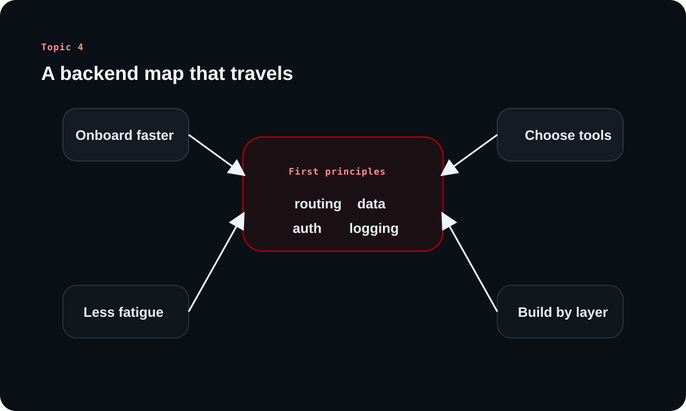

Why Backend Engineering Should Be Learned From First Principles
This article turns topic 4 into a clearer reading path for first-time learners. The through-line is simple: if you understand the reusable layers of backend work, new languages and frameworks stop feeling like entirely new professions.
The source argues that first principles are not abstract theory. They are the mental map that lets you enter unfamiliar codebases, split systems into understandable parts, and move with intent instead of panic.
Chapter 1
Why unfamiliar backends feel overwhelming
The source opens with a practical pain point: strong engineers still struggle when the stack suddenly changes underneath them.
The real friction is not only syntax
A front-end specialist may suddenly need to fix backend bugs, or a backend engineer comfortable in one language may have to work in another. The surface problem looks like syntax, but the deeper problem is orientation.
When the routing style, validation library, database layer, and project structure all change at once, people lose their map. They do not know where business logic lives, where requests are shaped, or where a bug is likely hiding.
New framework names make familiar backend ideas look unfamiliar.
Documentation feels overwhelming when there is no mental model to attach it to.
Engineers waste time learning the outer shell before understanding the core flow.
Pattern recognition is the unlock
The source describes senior engineers as people who can quickly separate a system into routing, middleware, database access, logging, and error handling. That is repeated exposure to the same backend building blocks in different clothes.
First-principles learning trains that habit. Instead of memorizing one framework's happy path, you learn to spot the recurring structures that appear almost everywhere.
Clarified note
First-principles learning does not remove the need to learn a new stack. It makes that learning compositional: you map new syntax onto familiar backend responsibilities.
Chapter 2
A reusable map speeds up onboarding and project work
Once the backend is seen as a set of recurring layers, unfamiliar codebases stop feeling like a wall and start feeling like a system you can traverse.
The layers that survive stack changes
The source repeatedly points back to universal backend concerns: how requests arrive, where they are routed, how middleware shapes them, how data is validated, where storage lives, and how failures are observed. These layers are portable across ecosystems.
That portability is why a new codebase becomes easier to read. Even when the package names change, you can still ask the same questions about flow, boundaries, and ownership.
HTTP and request handling
Routing and handler boundaries
Middleware, auth, and validation
Database interaction and persistence
Logging, caching, error handling, and async work
Learning diagram

The note's main promise is that reusable backend layers give you a stable map even when the language, framework, and libraries change.
Why new projects move faster from this foundation
The source claims that grounded backend thinking helps engineers move much faster on MVPs and production-quality systems. The idea is not speed through shortcuts. It is speed through less confusion.
If you already understand how routing, database connections, caching, and logging fit together, you can design each piece deliberately rather than copying tutorial boilerplate and repairing it later.
Chapter 3
Why syntax fatigue decreases when the problem is clear
The source gives a useful name to a common experience: the burnout that comes from learning more syntax before understanding the problem the syntax is supposed to solve.
Concept clarity changes the emotional load
Syntax fatigue is really context fatigue. When every token feels disconnected from the architecture, new stacks feel exhausting. But when you already know the backend module you are implementing, the task becomes narrower and calmer.
You are no longer asking how to learn a whole ecosystem. You are asking what the new stack uses to implement a validation layer, a router, or an auth boundary you already understand.
A modular translation strategy
The note uses moving from Node.js to Rust as an example. The recommended move is not to wait for a perfect end-to-end tutorial. Start with a project layout, isolate one module at a time, and translate known backend patterns into the new ecosystem.
That means solving routing, auth, validation, logging, and persistence as separate backend problems. By the end, the new language has been learned in the context of a real system rather than as disconnected syntax drills.
Chapter 4
First principles improve tool selection
A recurring source theme is freedom from stack loyalty. Once the problem is understood, tool choice becomes more objective and practical.
Choose tools for system needs, not personal habit
The note frames tool choice as a backend reasoning problem. Caching, relational storage, document storage, and streaming are different needs, so they deserve different tools.
First-principles thinking reverses stack loyalty. You begin from the requirement and only then choose the implementation technology that matches it best.
Use case
Recommended tool
Why it fits
Caching
Redis
Fast in-memory access and expiry-friendly data handling.
Relational data storage
PostgreSQL
Strong relational modeling and dependable querying.
Unstructured data
MongoDB
Flexible schemas when document shape changes often.
Real-time streaming
Kafka
Durable event distribution at scale.
Chapter 5
Why this mindset compounds over a career
The note ends by treating first-principles backend learning as a career advantage, not just a study preference.
Versatility creates leverage
Engineers who understand portable backend ideas contribute faster in mixed environments. They can enter teams with unfamiliar stacks and still reason about the request lifecycle, persistence choices, and failure modes.
That increases employability because the value is not locked to one framework. It also increases independence because engineers can evaluate systems critically instead of following recipes blindly.
Faster onboarding in unfamiliar teams
Better judgment when picking tools and patterns
More confidence moving between languages and architectures
How to practice this intentionally
The source encourages deliberate practice rather than waiting years for intuition to appear. A good practice loop is to study one backend layer at a time, implement it in small projects, then revisit the same layer in another language or framework.
That repetition builds the internal compass the note keeps referring to: a mental map of backend territory that travels with you.
Overall takeaway
What to keep in memory
Learning backend engineering from first principles is valuable because it creates a reusable map: requests, routing, middleware, storage, validation, logging, and system tradeoffs. That map reduces confusion, reduces syntax fatigue, and makes engineers more adaptable across languages and teams.